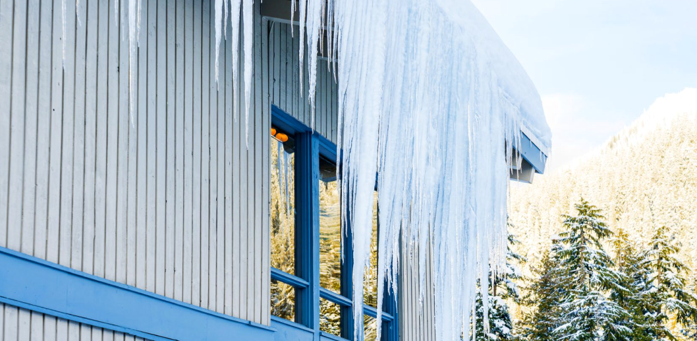

눈과 얼음의 적치 및 이탈로 인해 발생할 수 있는 유해한 결과의 위험을 관리할 수 있도록 적설 및 노화(Age)에 대한 분석을 수행합니다. 고급 분석을 통해 눈과 얼음에 대한 위험을 사전에 예측할 수 있으며, 그에 따라 적절한 대응이 가능해집니다. 이를 통해 대상 구조물에서 눈이나 얼음이 낙하하는 사건의 발생 빈도와 심각성을 크게 줄일 수 있도록 도울 수 있습니다. 전문가의 평가와 함께 RWDI는 특정 설계 요소의 상대적인 위험도를 판단하기 위해 자체 개발한 분석기술을 적용합니다. 이러한 낙하 위험은 대상건물에서 목표한 재현기간을 기준으로 정량화되어 평가됩니다.
대상 건물과 부지의 세부 조건을 바탕으로, 눈이 어떻게 쌓이고 “노화(Age)”되는지를 고려합니다. 적설 노화 과정을 모사하기 위해 고려하는 요소에는 기온, 태양복사, 풍력, 건물의 열손실, 적설층의 단열 특성, 일일 동결·융해 반복, 건축 재료의 표면 마찰 특성, 그리고 융해수의 배수 경로가 포함됩니다.
